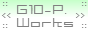

2010/01/14より、年齢制限つきサイトに関する規定が変更となりました。ご注意ください。
G10-Project Worksでは、相互リンクを随時受け付けております。
基本的にはどのようなサイトでも承認致しますが、
１.やむを得ず年齢制限を付けることとなったサイト（大人のみのＴＯＷＮや、R-18,R-15系同人サイトなど）に関しては
雑談掲示板にて管理者と要相談とします。
↑※2010/01/14追加
２.以下の項目に該当するサイトに対しては
承認を行わない場合があります。
・初めての方のリンク
よくある、「初めまして！相互リンクお願いします！」
というのは残念ながらお断りします。
最低でも１、２度掲示板に書き込みをしてからお願いします。
・立ち上げ直後サイト
サイト建設から最低一ヶ月以上経っていないサイトの相互リンクは基本的にお断りします。
ただし、サイト立ち上げ以前より管理人と親交が深い場合はこれに含みません。
迷われる場合は気軽にお尋ねください。
・基本コンテンツが整備されていないサイト
１．ユーザ側からサイト側に連絡する手段（例：掲示板・チャット・メールフォーム・その他連絡機能つきＣＧＩ等）
２．他サイトへのリンク
３．上記２つ以外の「メインコンテンツ」
（ただし、ＴＯＷＮ等連絡機能付きＣＧＩは１と３の２つの条件を満たすものとする。）
この３つが揃っていないサイトからのリンク申請は原則としてお断りいたしますが、
こちら側が判断して特別よいコンテンツがある場合は、例外として許可いたします。
こちらも迷われる場合は気軽にお尋ねください。
・R-18サイト、その他犯罪系サイト
ちなみにグロ表現のあるR-15もしくはR-17サイトについては
露骨な残虐的写真等が無い限り許可します。
↑※2010/01/14削除
（年齢制限付きサイトに関しては「１．」に別記とした。「その他犯罪系サイト」は下の「その他、管理者が不適当と考えるサイト」に該当するため削除。）
・その他、管理者が不適当と考えるサイト
犯罪を助長するサイト、極端な宗教的サイト、暴力団関連サイト等、管理者が不適当とするサイト
は他の条件に該当しない場合でも受け付けません。ご了承ください。
以上の項目に該当しないサイトの管理者様は、先にこちらへのリンクをお貼りいただいた上で、
雑談掲示板にて、申請をお願い致します。
なお、当サイトに関する情報は以下の通りとなっております。
サイト名：G10-Project Works
管理者：雨宮松雪
ＵＲＩ（URL）：http://g10.daiwa-hotcom.com/
バナーは以下のものをご利用ください。
88*31バナー

200*45バナー
|